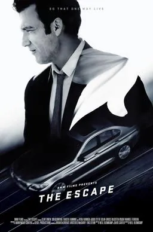

The genetics
This short action film is built around an illegal human-cloning operation. The company Molecular Genetics produced clones as saleable "specimens", and Lily, the last one, is handled by the mercenary escorting her as merchandise; the driver who sides with her is the film's moral centre. The geneticist who made her, Dr. Nora Phillips, turns out to be the buyer at the end and takes maternal custody of her, which reframes the creator as someone rescuing her creation rather than selling it, though the summary says nothing about her motives or about what happened to the other three clones. The only available source is a short plot summary, so the film's attitude to Phillips is uncertain. The science is not shown; cloning simply makes Lily a person treated as property.
How genetics is portrayed
- Overall portrayal of genetics
- mixed Illegal commercial cloning is condemned through the raid and the mercenary's treatment of Lily, while the geneticist herself ends as a protective maternal figure.
- Outcome of the genetic intervention
- mixed The cloning produces people treated as merchandise, hunted and handled violently, and three of the four clones are gone, but Lily ends in the care of her creator.
- Molecular Genetics company
- villain Aim: commercial (negative). The company ran illegal human cloning and treats its clones as specimens sold to customers; its operation is raided by the FBI.
- Dr. Nora Phillips
- ambivalent Aim: personal (neutral). Phillips made Lily and three other clones and turns out to be the customer, taking maternal custody of Lily; the film gives no motive for the cloning and casts the ending as a reunion.
The story
After the illegal human-cloning operations of the company Molecular Genetics are exposed and its geneticist, Dr. Nora Phillips, disappears, the FBI raids the facility. A ruthless mercenary, Holt, secures the one surviving "specimen", a young woman named Lily, to deliver her to an unnamed customer who has bought her. A hired driver is engaged to take them, with Holt riding along to make sure the delivery happens and to order him to evade the pursuing FBI. Disgusted by the way Holt treats Lily as an object, the driver overpowers him and throws him out of the car. Holt pursues them with a sniper rifle from a helicopter, but the driver outruns his men and leaves him stranded on the road, where the FBI arrests him. At the extraction point Lily tells the driver that Dr. Phillips made her and three other clones, who are gone; the customer turns out to be Dr. Phillips herself, who takes Lily into her care.